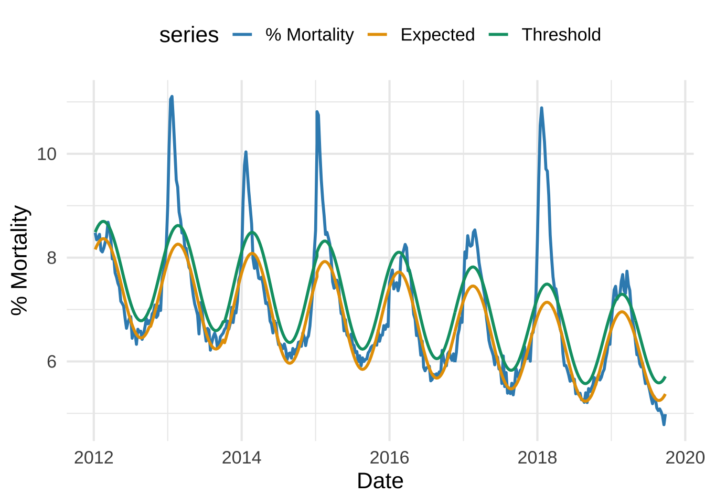
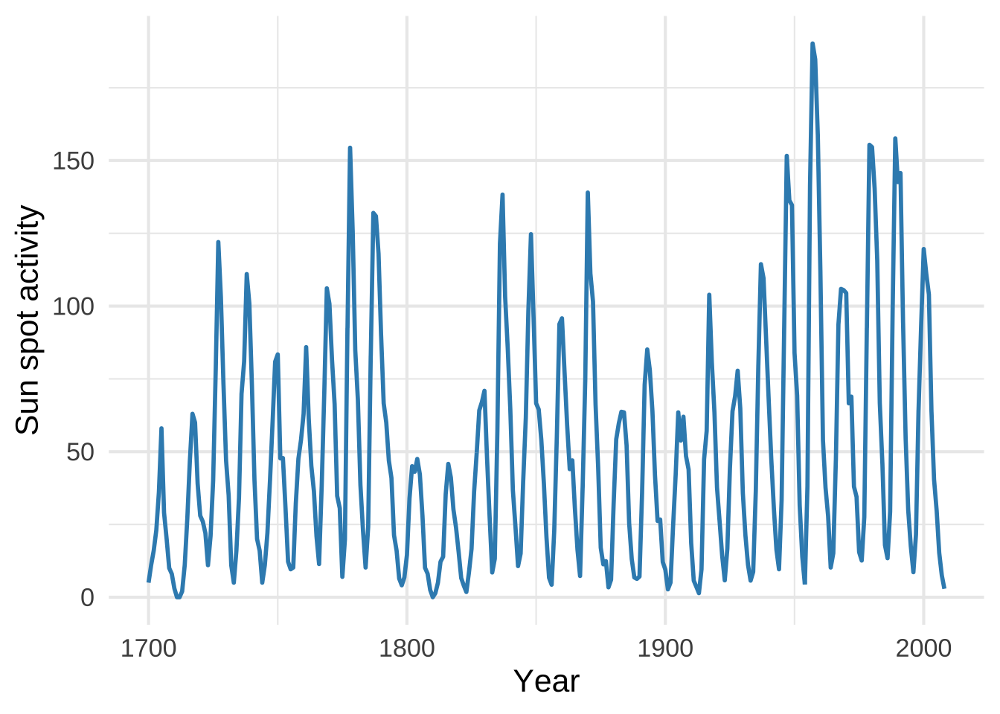
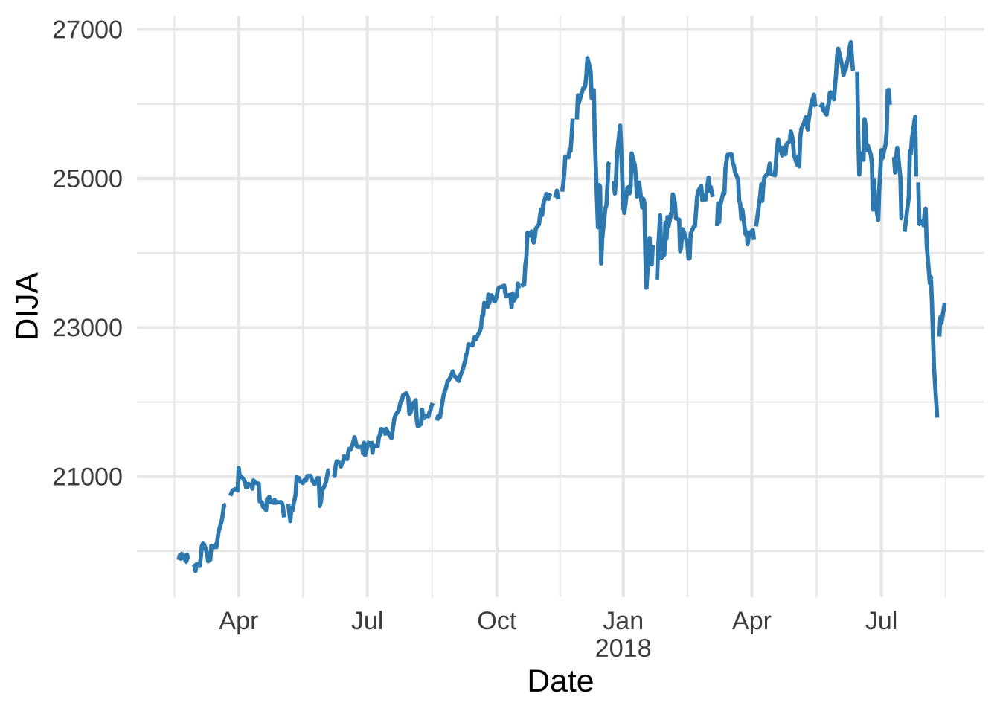
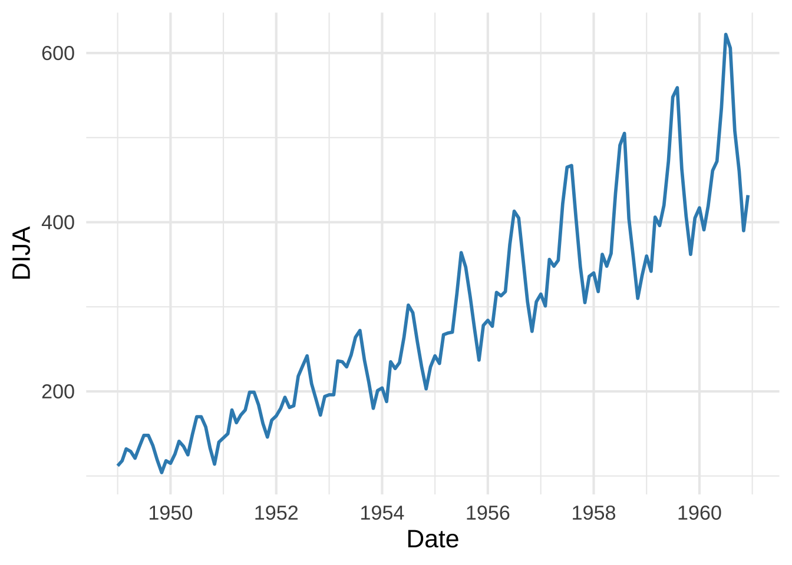
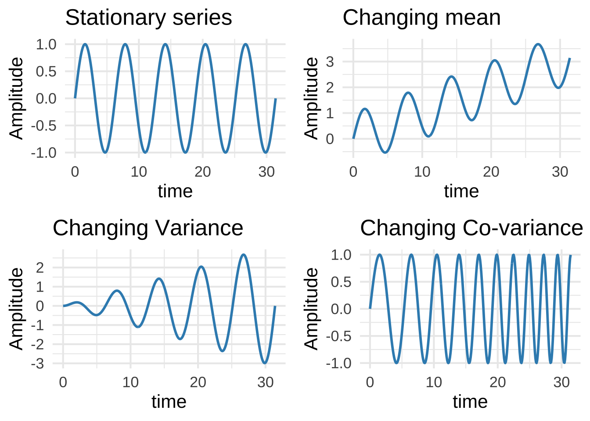
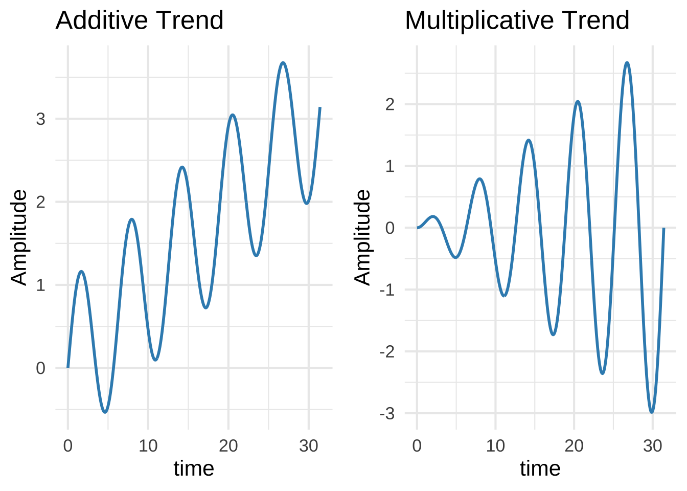

if (!require(pacman)) install.packages('pacman')Loading required package: pacmanp_load(colorblindr,
dlookr,
here,
janitor,
tidyverse,
timetk)
theme_set(theme_minimal(base_size = 16))if (!require(pacman)) install.packages('pacman')Loading required package: pacmanp_load(colorblindr,
dlookr,
here,
janitor,
tidyverse,
timetk)
theme_set(theme_minimal(base_size = 16))The first timeseries will consider is the US Quarterly GDP for the past 70 years.
GDP <- read_csv(here("data", "GDP.csv")) |>
mutate(DATE = as_date(DATE))Rows: 290 Columns: 2
── Column specification ────────────────────────────────────────────────────────
Delimiter: ","
dbl (1): GDP
date (1): DATE
ℹ Use `spec()` to retrieve the full column specification for this data.
ℹ Specify the column types or set `show_col_types = FALSE` to quiet this message.GDP |> diagnose()# A tibble: 2 × 6
variables types missing_count missing_percent unique_count unique_rate
<chr> <chr> <int> <dbl> <int> <dbl>
1 DATE Date 0 0 290 1
2 GDP numeric 0 0 290 1GDP |> glimpse()Rows: 290
Columns: 2
$ DATE <date> 1947-01-01, 1947-04-01, 1947-07-01, 1947-10-01, 1948-01-01, 1948…
$ GDP <dbl> 2033.061, 2027.639, 2023.452, 2055.103, 2086.017, 2120.450, 2132.…There is a clear upward trend:
GDP |>
plot_time_series(.date_var = DATE,
.value = GDP,
.interactive = TRUE,
.x_lab = "Date",
.y_lab = "GDP ($B)",
.smooth = FALSE,
.line_color = "#378DBD")Next, we look the percentage of deaths attributed to Influenza and Pneumonia in the past 8 years:
ILI <- read_csv(here("data", "CDC.csv")) |>
clean_names() |>
mutate(date = year + week/52)Rows: 403 Columns: 8
── Column specification ────────────────────────────────────────────────────────
Delimiter: ","
dbl (8): Year, Week, Percent of Deaths Due to Pneumonia and Influenza, Expec...
ℹ Use `spec()` to retrieve the full column specification for this data.
ℹ Specify the column types or set `show_col_types = FALSE` to quiet this message.ILI |> glimpse()Rows: 403
Columns: 9
$ year <dbl> 2012, 2012, 2012, 201…
$ week <dbl> 1, 2, 3, 4, 5, 6, 7, …
$ percent_of_deaths_due_to_pneumonia_and_influenza <dbl> 8.479120, 8.343472, 8…
$ expected <dbl> 8.15718, 8.22181, 8.2…
$ threshold <dbl> 8.49104, 8.55556, 8.6…
$ all_deaths <dbl> 51102, 50962, 51010, …
$ pneumonia_deaths <dbl> 4323, 4245, 4261, 422…
$ influenza_deaths <dbl> 10, 7, 9, 11, 9, 19, …
$ date <dbl> 2012.019, 2012.038, 2…The seasonal behavior in unmistakable. The purple curve illustrates the expected seasonal behavior, while the green curve displays the threshold above which we are facing an epidemic:
ILI |>
select(date, percent_of_deaths_due_to_pneumonia_and_influenza, expected, threshold) |>
pivot_longer(!date, names_to = "series", values_to = "values") |>
mutate(series = fct_relevel(series, "percent_of_deaths_due_to_pneumonia_and_influenza",
"expected", "threshold")) |>
ggplot(aes(x = date, y = values, color = series)) +
geom_line(size = 1) +
scale_color_manual(labels = c("% Mortality", "Expected", "Threshold"),
values = c("#378DBD", "#E69F00", "#009E73")) +
labs(x = "Date", y = "% Mortality") +
theme(legend.position = "top")Warning: Using `size` aesthetic for lines was deprecated in ggplot2 3.4.0.
ℹ Please use `linewidth` instead.
The number of observed sun spots over 300 years also display a nice seasonal behavior over the course of a decade or so:
Sun <- read_csv(here("data", "sun.csv")) Rows: 309 Columns: 2
── Column specification ────────────────────────────────────────────────────────
Delimiter: ","
dbl (2): YEAR, SUNACTIVITY
ℹ Use `spec()` to retrieve the full column specification for this data.
ℹ Specify the column types or set `show_col_types = FALSE` to quiet this message.Sun |> glimpse()Rows: 309
Columns: 2
$ YEAR <dbl> 1700, 1701, 1702, 1703, 1704, 1705, 1706, 1707, 1708, 1709…
$ SUNACTIVITY <dbl> 5, 11, 16, 23, 36, 58, 29, 20, 10, 8, 3, 0, 0, 2, 11, 27, …Sun |>
ggplot(aes(x = YEAR, y = SUNACTIVITY)) +
geom_line(size = 1, color = "#378DBD") +
labs(x = "Year", y = "Sun spot activity") 
The Dow-Jones Industrial Average also has a clear uptrend like GDP but with significantly larger fluctuations:
DJIA <- read.csv(here("data", "DJIA.csv"), na.strings = ".") |>
mutate(DATE = as_date(DATE))DJIA |> glimpse()Rows: 2,609
Columns: 2
$ DATE <date> 2009-10-12, 2009-10-13, 2009-10-14, 2009-10-15, 2009-10-16, 2009…
$ DJIA <dbl> 9885.80, 9871.06, 10015.86, 10062.94, 9995.91, 10092.19, 10041.48…DJIA |> diagnose()# A tibble: 2 × 6
variables types missing_count missing_percent unique_count unique_rate
<chr> <chr> <int> <dbl> <int> <dbl>
1 DATE Date 0 0 2609 1
2 DJIA numeric 94 3.60 2506 0.961DJIA |>
filter(between(DATE, as.Date("2016-12-31"), as.Date("2019-01-01"))) |>
ggplot(aes(x = DATE, y = DJIA)) +
geom_line(size = 1, color = "#378DBD") +
labs(x = "Date", y = "DIJA") +
scale_x_date(
date_breaks = "4 months",
labels = c("Jan\n2017", "Apr", "Jul", "Oct", "Jan\n2018", "Apr", "Jul", "Oct")
) +
coord_cartesian(xlim = as.Date(c("2016-12-31", "2019-01-01"))) 
The number of passenters in international flights in the 50s displays both a trend and a seasonal pattern
airline <- read.csv(here("data", "international-airline-passengers.csv"), sep = ";") |>
mutate(Month = paste0(Month, "-01"),
Month = as_date(Month))airline |> head() Month Passengers
1 1949-01-01 112
2 1949-02-01 118
3 1949-03-01 132
4 1949-04-01 129
5 1949-05-01 121
6 1949-06-01 135airline |>
ggplot(aes(x = Month, y = Passengers)) +
geom_line(size = 1, color = "#378DBD") +
labs(x = "Date", y = "DIJA") +
scale_x_date(date_breaks = "2 years",
date_labels = "%Y")
There are several kinds of non-stationarity. Here we illustrate the most common ones with simple toy examples:
# Create data
x <- seq(0, 10*pi, length.out = 360)
y <- sin(x)
df <- tibble(
x = x,
stationary = y,
changing_mean = y + x/10,
changing_variance = y * x/10,
changing_covariance = sin(x + x^2/30)
)
# Plot
plots <- list(
ggplot(df, aes(x = x, y = stationary)) +
geom_line(size = 1, color = "#378DBD") +
labs(title = "Stationary series", x = "time", y = "Amplitude"),
ggplot(df, aes(x = x, y = changing_mean)) +
geom_line(size = 1, color = "#378DBD") +
labs(title = "Changing mean", x = "time", y = "Amplitude"),
ggplot(df, aes(x = x, y = changing_variance)) +
geom_line(size = 1, color = "#378DBD") +
labs(title = "Changing Variance", x = "time", y = "Amplitude"),
ggplot(df, aes(x = x, y = changing_covariance)) +
geom_line(size = 1, color = "#378DBD") +
labs(title = "Changing Co-variance", x = "time", y = "Amplitude")
)
# Arrange the plots in a grid
gridExtra::grid.arrange(plots[[1]], plots[[2]], plots[[3]], plots[[4]], ncol = 2)
Two of the most common non-stationarity types are due to differnet kinds of trends that we illustrate here:
# Create data
x <- seq(0, 10*pi, length.out = 360)
y <- sin(x)
df <- tibble(
x = x,
additive_trend = y + x/10,
multiplicative_trend = y * x/10
)
# Additive Trend Plot
additive_plot <- ggplot(df, aes(x = x, y = additive_trend)) +
geom_line(size = 1, color = "#378DBD") +
labs(title = "Additive Trend", x = "time", y = "Amplitude")
# Multiplicative Trend Plot
multiplicative_plot <- ggplot(df, aes(x = x, y = multiplicative_trend)) +
geom_line(size = 1, color = "#378DBD") +
labs(title = "Multiplicative Trend", x = "time", y = "Amplitude")
# Arrange the plots side by side
gridExtra::grid.arrange(additive_plot, multiplicative_plot, ncol = 2)